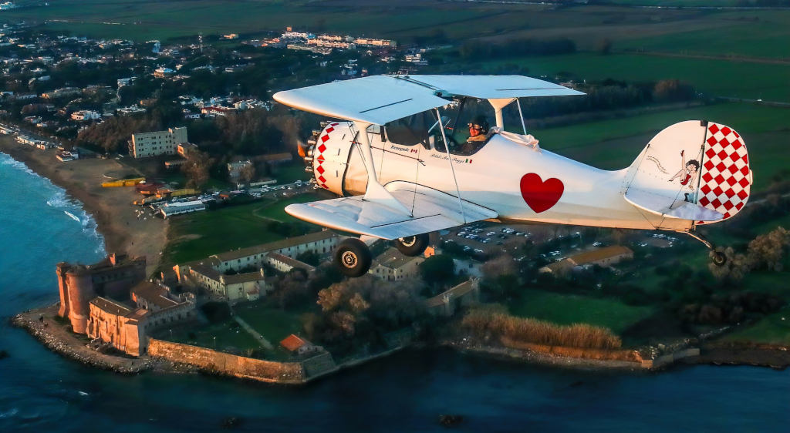

All'inizio dell'anno 2005 un gruppo di amici, supportato da un'amministrazione comunale intelligente e
lungimirante,
tesa a valorizzare il territorio facendo crescere questa piccola realtà del litorale laziale,
inserita nella bellezza dei Monti della Tolfa,
decide di far rinascere l'ormai abbandonato campo di volo di Santa Severa Nord.

Nasce così nel 2006 la "Aviogestioni Sportive ssd - Società Sportiva dilettantistica a responsabilità
limitata",
per reperire i fondi necessari alla realizzazione.
Inaugurata la struttura nel settembre del 2007,
a tutt'oggi la società gestisce una struttura sicura dal punto di vista aeronautico, pulita e piacevole,
perfettamente inserita nell'ambiente, dove trascorrere una giornata serena e divertente nel verde.